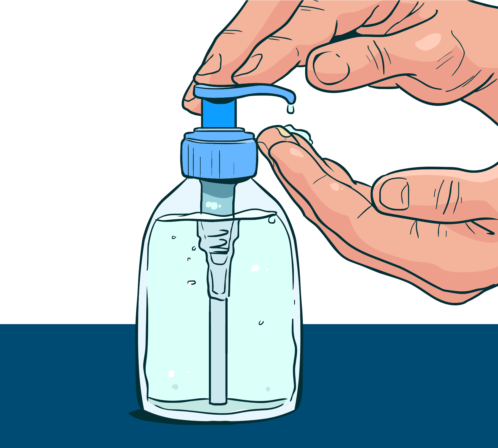

Formas de prevenção da covid-19
Higienização
A estrutura do SARS-Cov-2 é considerada bem simples. Ele é formado por um material genético do tipo RNA, envolto por uma camada externa composta de gordura. Essa camada de gordura é facilmente destruída por higienização com sabão, alvejantes ou álcool 70%. Todos esses produtos inativam o vírus.